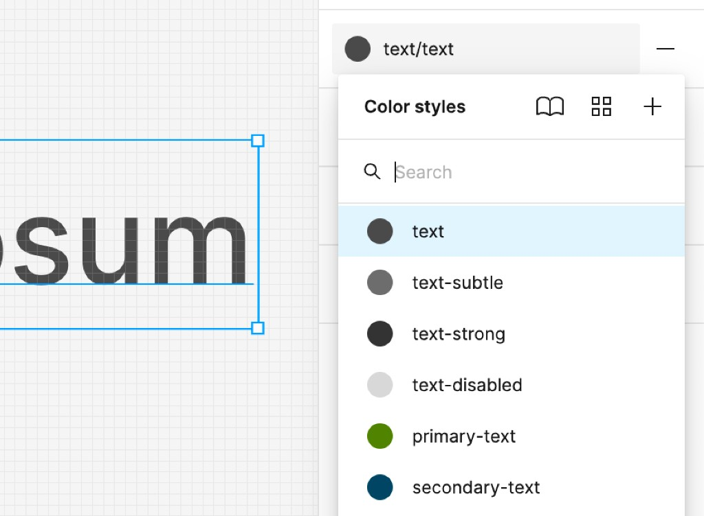
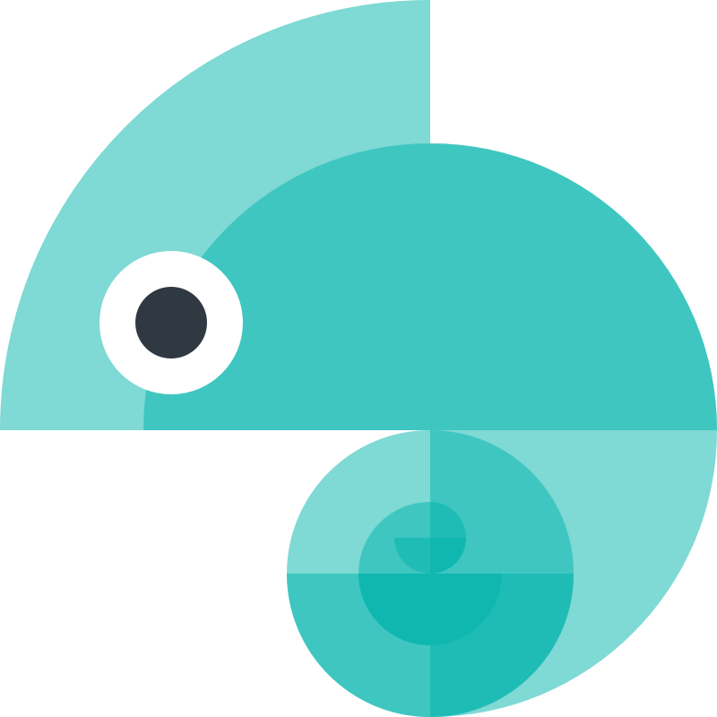

One change updates 6 platforms — adding $6M to YoY pipeline
When a designer changed a color in Figma, engineers had to manually update it in CSS, Tailwind, MUI, SwiftUI, Android XML, and email templates. I built a token system that makes those changes once, automatically — across every platform, including light mode, dark mode, and responsive sizing.
What I did
I designed the token architecture end-to-end: picked Tokens Studio as the design-owned source of truth (keeping engineers out of the critical path), built the CI pipeline that exports, runs WCAG contrast checks, and publishes to CSS, Tailwind, MUI, SwiftUI, Android XML, and email in a single PR. I also structured Figma variables so designers could preview responsive breakpoints and theme switches live — no resizing, no hand-off delays.
Where the story lands
- Export → PR
- WCAG in CI
- Publish
- CSS
- Tailwind
- MUI
- Swift
- Android
Those same decisions also power live previews across brand, light / dark, density, and breakpoint — the four theme switches designers toggle in Figma before code ships.
From a collaborator
“Felix is the whole package. As a leader in developing and maintaining Design Systems, Felix drives process with active listening, encouraging teams to contribute, then incorporating feedback. He has the unique ability to be creative, precise, collaborative and open-minded. His kind, generous spirit sharing his knowledge made a huge difference to our team. We miss him already. I highly recommend Felix. He will elevate your team, and company, with humility and humanity.”
Katy, Senior Designer — Read on LinkedIn
Design said "blue," engineering had three different values
Colors, spacing, and typography lived in scattered files — Figma styles, CSS variables, Tailwind configs — and none of them agreed. Dark mode was bolted on after the fact. Responsive sizing was handled differently in every codebase.
A rebrand was about to land. Without a shared system, each team would interpret it independently — multiplying the inconsistencies. Theming a new brand meant weeks of manual find-and-replace across codebases.
Done right: designers own the tokens, engineers never touch them
- One source of truth for all design decisions — colors, spacing, typography, motion
- Automated pipeline: a change in Figma should update code with zero manual steps
- Support for brand, light/dark mode, density, and screen size from the same source
- Every color combination passes contrast checks automatically, before code ships
Same token names — different resolved values when you switch themes. This is how products with very different needs could share a common language.
Four layers from raw values to platform-ready code
At the bottom raw values are organized — a color ramp, a spacing scale, a type scale. Just numbers, no meaning attached. The next layer assigns purpose: "this is the primary brand color," "this is the default body text size." The third layer captures roles that work across any brand: "headline color," "interactive background."
As a final step, those choices are compiled into the format each platform actually uses — scoped so every consumer only sees what's relevant to them.

Names describe purpose, not appearance
A token called "blue-500" tells you nothing about when to use it. A token called "text-subtle" tells you exactly what it's for. We treated naming as a design decision — every name communicates a role, so a rebrand only changes the values, never the structure. This is what made it possible to swap an entire brand palette in hours instead of weeks.

Designers change a value, code updates automatically
Designers edit tokens directly in Figma using Tokens Studio and see changes preview live. Style Dictionary turns exports into platform-ready files. When ready, changes land as a pull request in Git. Automated checks verify every color combination meets contrast requirements. Only then does the change publish to all six platform targets.
This removed the back-and-forth where designers would spec a value and engineers would implement something slightly different. It also had an unexpected benefit: engineers started reviewing design PRs, which deepened their understanding of design intent.
Breakpoints handled before you even think to ask
Figma doesn't support percentage-based layouts. We worked around this by creating size tokens that mirror the exact responsive math used in code — column gaps, container widths, margin sizes. A designer creates one frame, toggles a "screen size" theme, and instantly sees how the layout looks at every breakpoint. No manual resizing, no guessing.
We also connected component properties to theme variables. A horizontal button group on desktop automatically stacks vertically on mobile — one toggle changes the entire composition. Designers set the intent and the layout adapts. They stop thinking in pixels and start thinking in decisions.
New designs inherit responsive behavior automatically
Because every element down to the layout is wired to size tokens on an atomic level, any new design already knows how to behave at every breakpoint. No redesigning for mobile — just switch and preview.
Moving faster added $6M to the pipeline
The business projected $15M in additional pipeline from improving the website — conversion rates, engagement, compounding over the year.
The gap between the two lines in the chart is the value of moving faster. The adjusted timeline generates an additional $5.83 million in pipeline compared to the original timeline over the 12-month period.
The hardest part wasn't the architecture — it was the trust
Engineers needed to believe the token values would be correct. Designers needed to believe their intent would survive the automated pipeline. PMs needed to believe that theming wouldn't slow down delivery.
Early on, I made the mistake of presenting the token architecture as a finished plan. Engineers pushed back — not on the idea, but because they hadn't been involved in the decisions. I shifted to sharing the architecture as a proposal and running joint sessions where engineers could stress-test the naming and layering against their actual codebases. Adoption accelerated once people felt they'd shaped the system, not just received it.